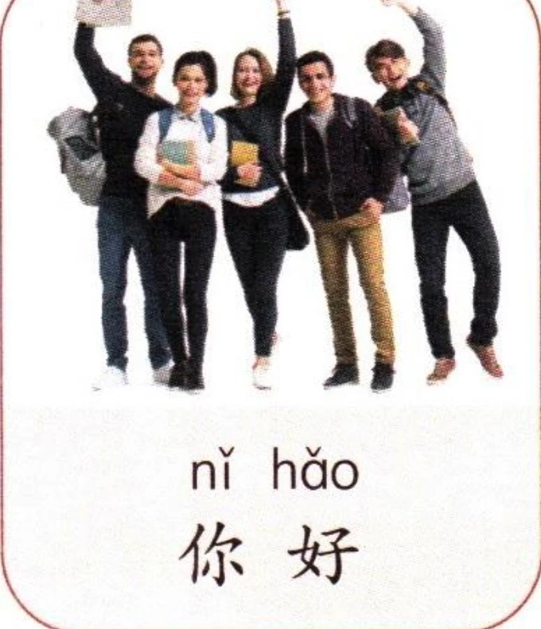
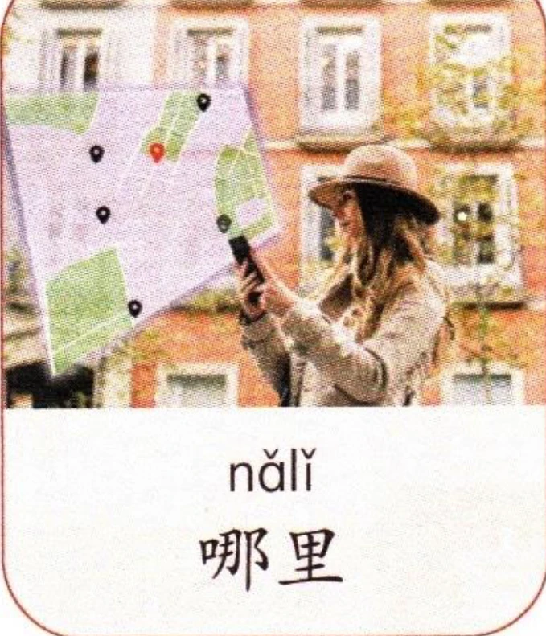
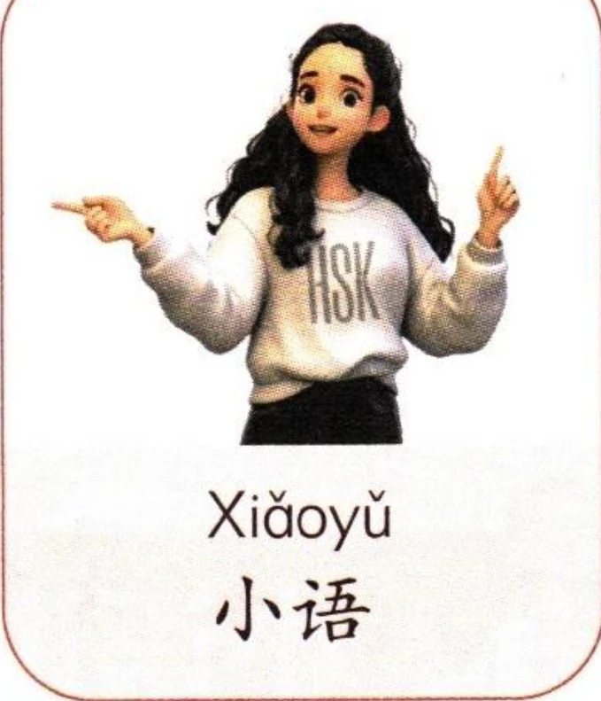
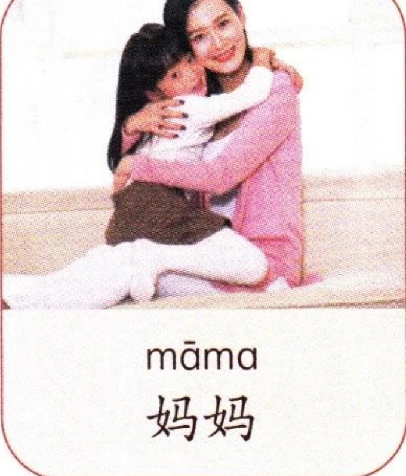
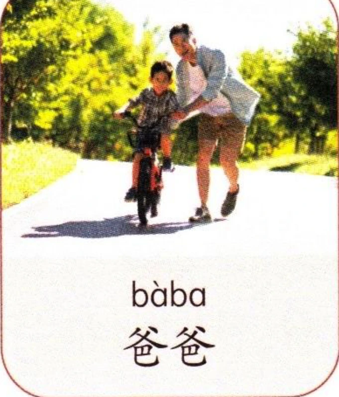
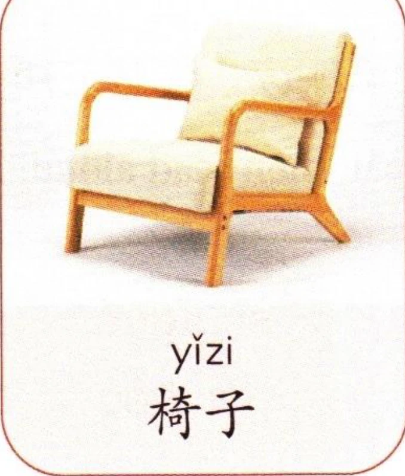
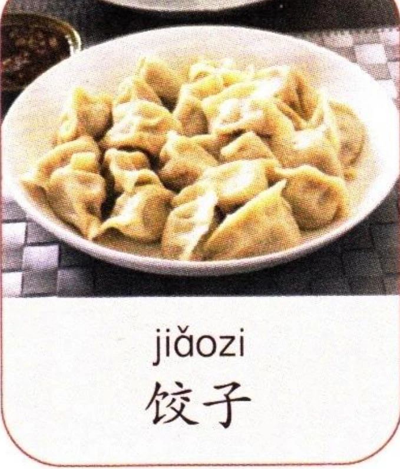

看图片，先跟读，再大声朗读。注意三声变调。Look at the pictures, listen and repeat, then read aloud. Note the sandhi of the third tone.Посмотрите на картинки, послушайте и повторите, затем прочитайте вслух. Обратите внимание на сандхи третьего тона.



2轻声Neutral ToneНейтральный тон
除四个基本声调外，汉语中有些音节不带声调，读音又轻又短，被称为轻声。轻声通常不做声调标记。例如：“jiǎozi、bàba”。In addition to the four basic tones, some syllables in Chinese are pronounced without a specific tone and sound light and short; these are referred to as the neutral tone. In writing, the neutral tone is usually unmarked. For example: “jiǎozi” and “bàba”.В дополнение к четырем основным тонам, некоторые слоги в китайском произносятся без определенного тона, легко и коротко; их называют нейтральным тоном. На письме нейтральный тон обычно не маркируется. Например: «jiǎozi» и «bàba».
汉语中一些词语读不读轻声，意义会不一样。例如：In Chinese, whether certain words are pronounced with a neutral tone can change their meanings. For example:В китайском языке то, произносятся ли определенные слова с нейтральным тоном, может изменять их значение. Например:
看图片，先跟读，再大声朗读。注意轻声发音。Look at the pictures, listen and repeat, then read aloud. Note the neutral tone.Посмотрите на картинки, послушайте и повторите, затем прочитайте вслух. Обратите внимание на нейтральный тон.



